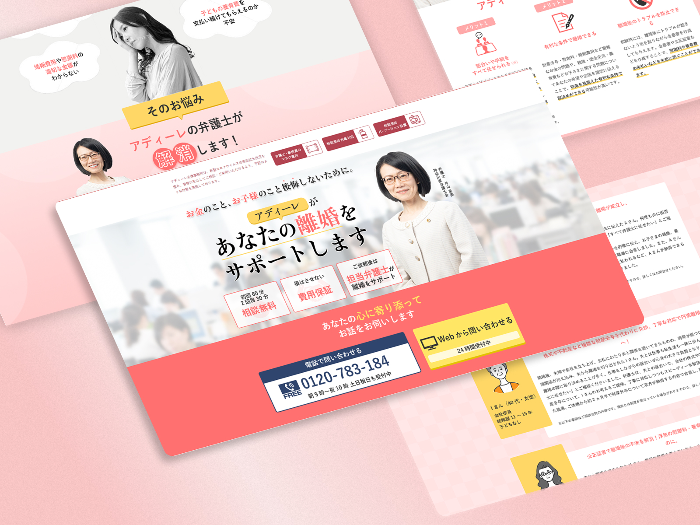

The official website design
What’s website?
Are you a married woman contemplating divorce but feeling unsure about how to proceed? If you've recently resumed divorce services but haven't received a call yet, our purpose is to assist you in making that crucial first contact. This landing page is designed to guide you through the process and encourage you to take the first step toward the next chapter of your life.
GOAL
Executing an advertising campaign aimed at women to increase awareness of divorce services. To prompt inquiries and encourage phone calls, a clear Call-to-Action (CTA) button has been strategically placed. The text was crafted by a writer, the direction was overseen by a director, and I handled the design.
Details
- Design for Women:
- Created the main visual featuring a female lawyer, with pink as the primary color to appeal to women. In the "Do you have concerns like these?" section, we added visuals depicting women in distress to clearly convey that this is a landing page tailored for women.
- Prompting action:
- Created several color options for the CTA phone button and presented them to the director and writer. Among them, we chose a bold navy color to ensure that even those quickly skimming the page would easily identify the inquiry button, making it stand out on the page.
- Responsive Design:
- Optimized the font size and presentation to ensure readability without sacrificing aesthetics, making it easy to navigate and read on smartphones and iPads.